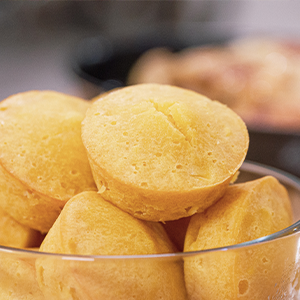
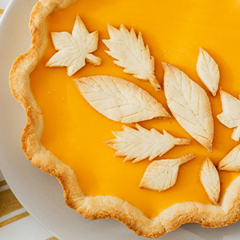
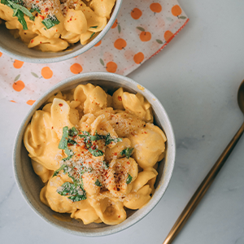
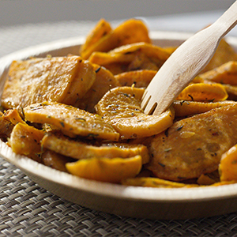
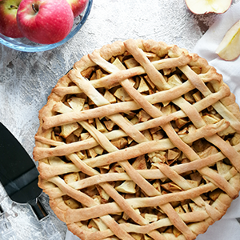

Corn Bread
Ingredients:
- 1 cup al-purpose flour
- 1 cup yellow cornmeal
- 2/3 cup white sugar
- 3 1/2 teaspons baking powder
- 1 teaspoon salt
- 1 cup milk
- 1/3 cup vegetable oil
- 1 large egg
Steps:
- Preheat the oven to 400 degrees F
- Whisk flour, cornmeal, sugar, baking powder, and salt together in a large bowl.
Add milk, vegetable oil, and egg; whisk until well combined. Pour batter into the prepared pan.
- Bake in the preheated oven until a toothpick inserted into the center of the pan comes out clean, 20 to 25 minutes.

Pumpkin Pie
Ingredients:
- Pie Crust
- Pumpkin Puree
- Sweetend Condesned Milk
- Eggs
- Pumpkin Pie Spice
Steps:
- Gather all ingredients
- Preheat the oven to 425 degrees F
- Fit pie crust into a 0-inch pie dish and place it on a baking sheet.
- Combine pumpkin puree condensed milk, eggs, and pumpkin pie spice in a large bowl: mix until combined.
- Pour mixture into the pie crust.
- Bake in the preheated oven for 15 minutes. Reduce heat to 350 degrees F
- Remove from the ove, set on a wire rack, and cool completely before serving.

Mac and Cheese
Ingredients:
- Macaroni
- Butter
- Flour
- Milk
- Cheese
- Seasonings
- Bread crumbs
Steps:
- Boil the noodles
- Melt the butter, whisk in flour and stir in cheese into a saucepan.
- Season with salt and pepper and contine simmering until the sauce has thicken.
- Pour the sauce over the noodles and stir together.
- Bake in the preheated oven until top is golden brown.

Oven Roasted Sweet Potatoes
Ingredients:
- 4 cups chopped peeled sweet potato
- 1 sweet onion, diced
- 2 cloves garlic, sliced
- 3 tablespoons olive oil
- 1 tablespoon balsamic vinegar
- 1 pinch salt and ground black pepper to taste
Steps:
- Preheat the oven to425 degrees F
- Mix sweet potatoe, onio, and garlic in a bowl
- Drizzle olive oil over the mixture and toss to coat
- Roast sweet potato mixture in the preheatd oven, turning frequently until vegetables are soft golden brown.
- Remove from the oven. Drizzle balsamic vinega, and season with salt and pepper.

Apple Pies
Ingredients:
- 2 (9 inch) unbaked pie crusts
- 7 cups peele, cored and sliced apples
- 1 cup of white sugar
- 2 tablespoos al-purpose flour
- 1 teaspoon ground cinnamon
- 1/4 teaspoons salt
- 1/8 teaspoons groun nutmeg
- 2 tablespoons butter
Steps:
- Preheat the oven to 425 degrees F
- Combine apple, sugar, flour, cinnamon, salt, and nutmeg in a bowl.
- Place mixture into prepared pie plate
- Cover with top crust and seal
- Cut holes in the top of crust to allow ventin
- Bake in preheated oven for 10 mins
- Bake until crust is golden brown and apples are tender (40-5mins
- Cool and serve